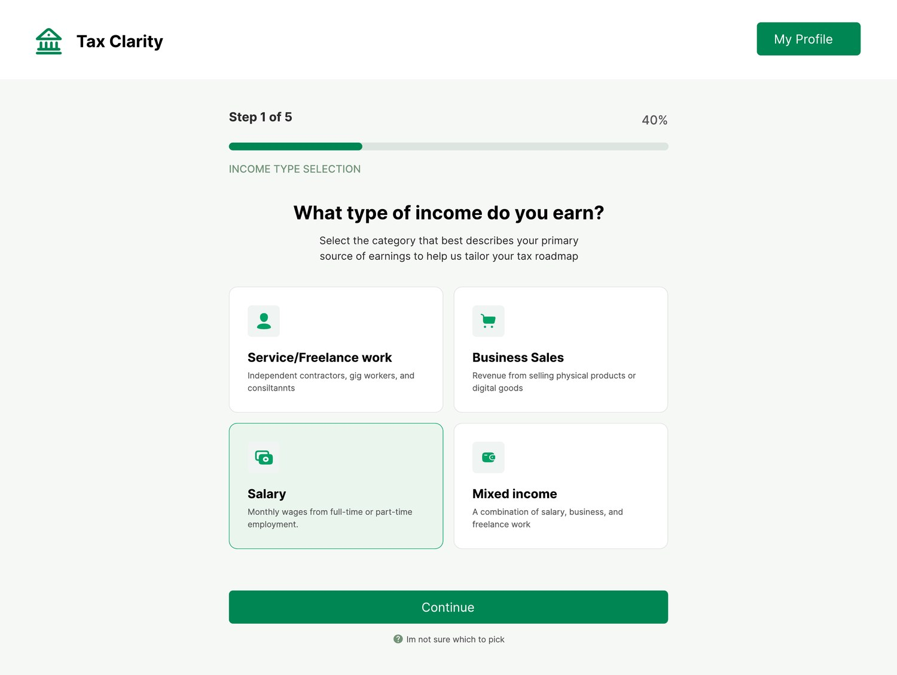
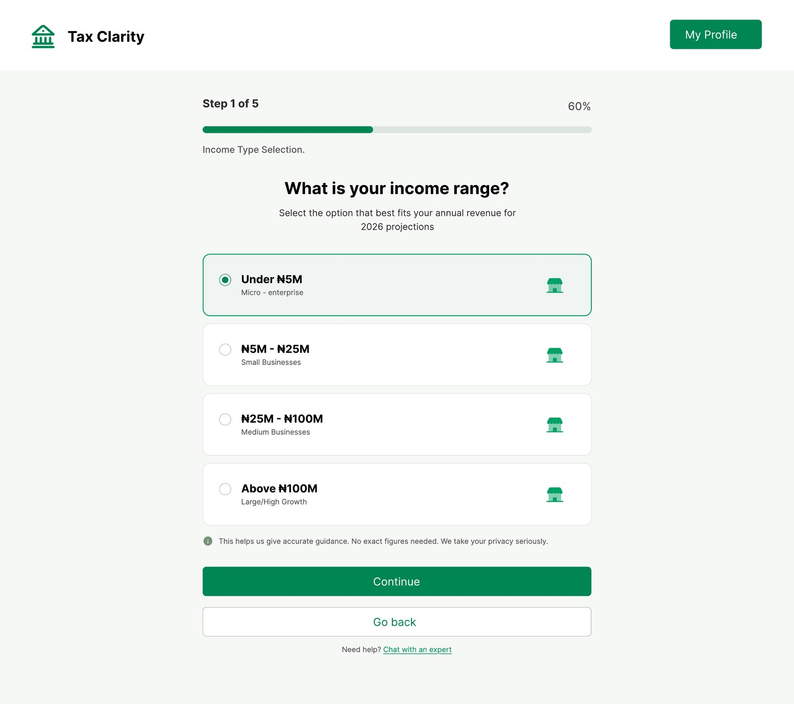
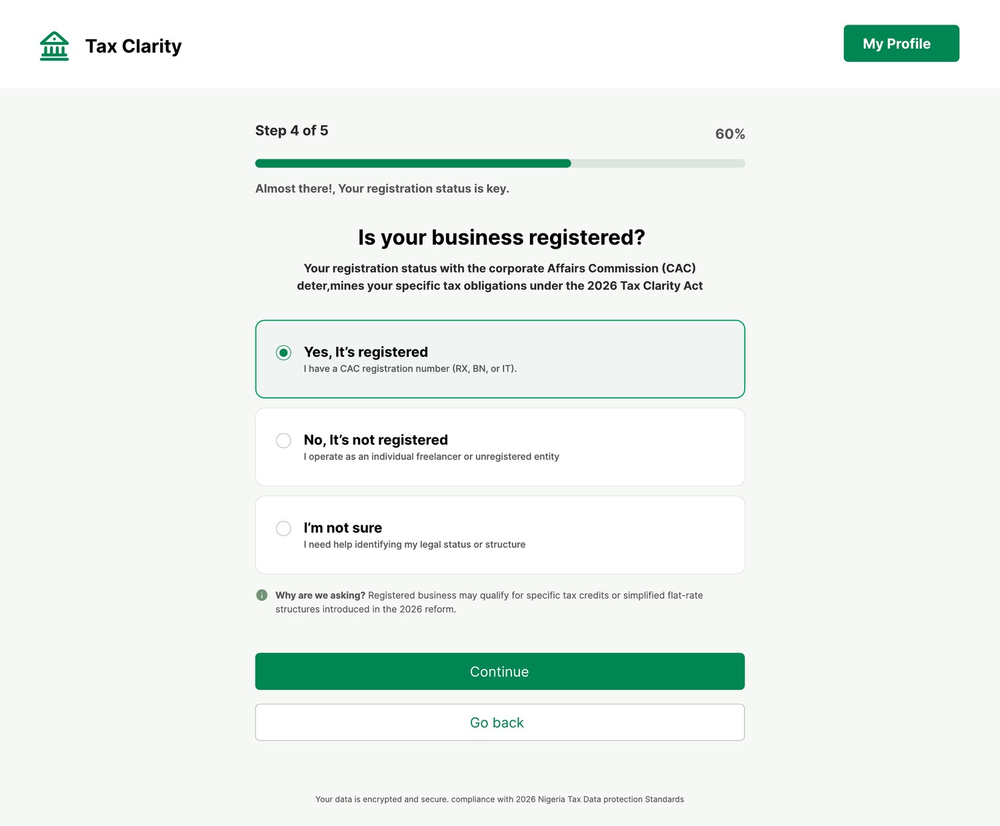
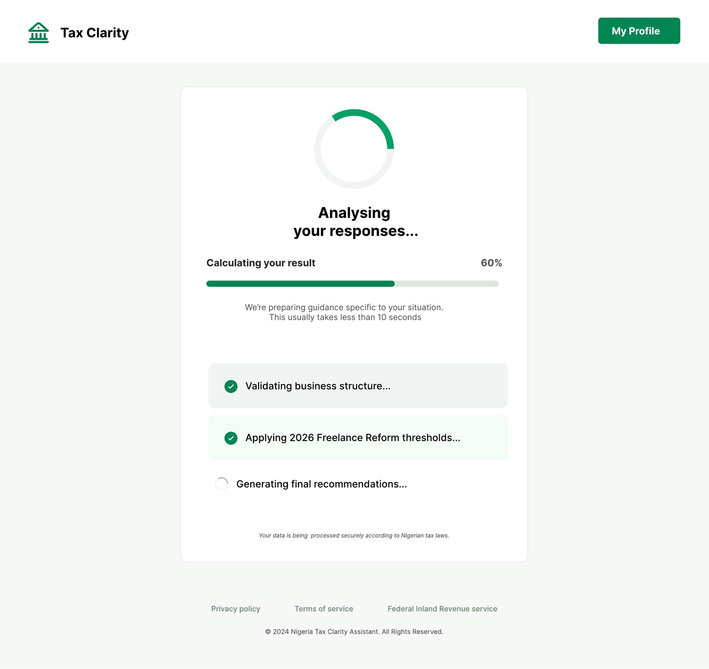
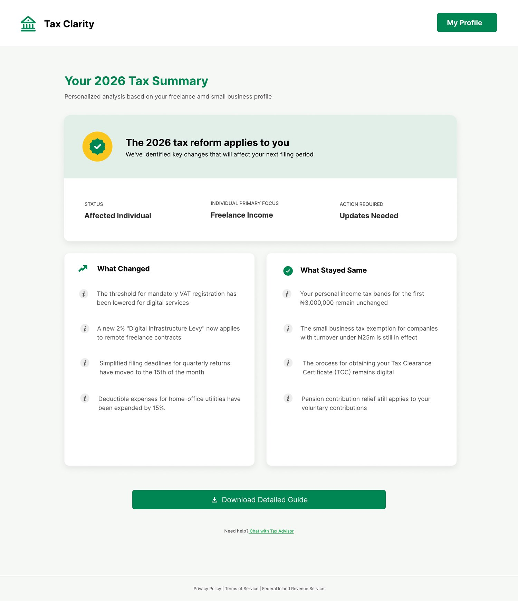
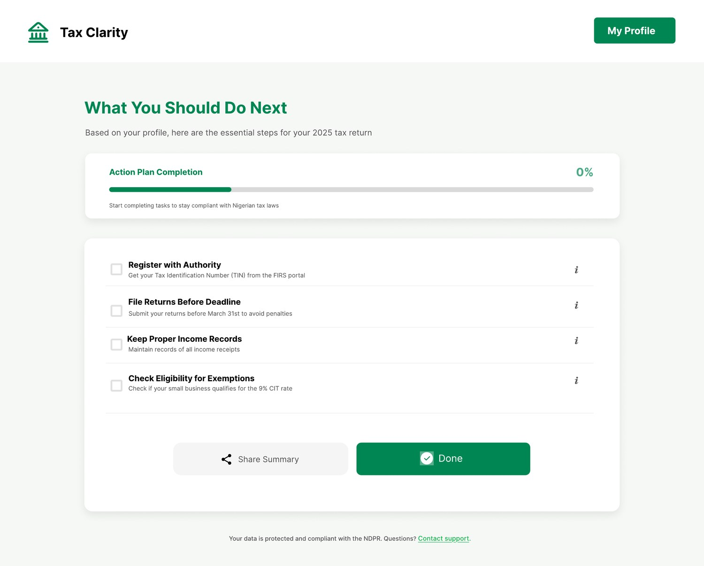
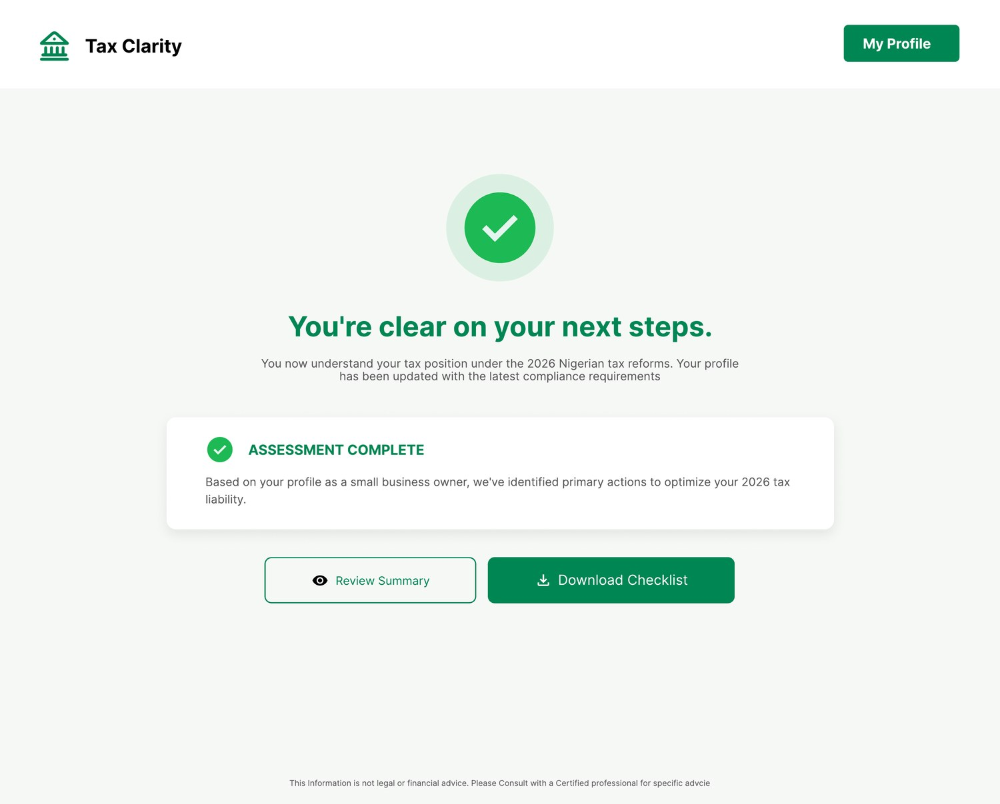
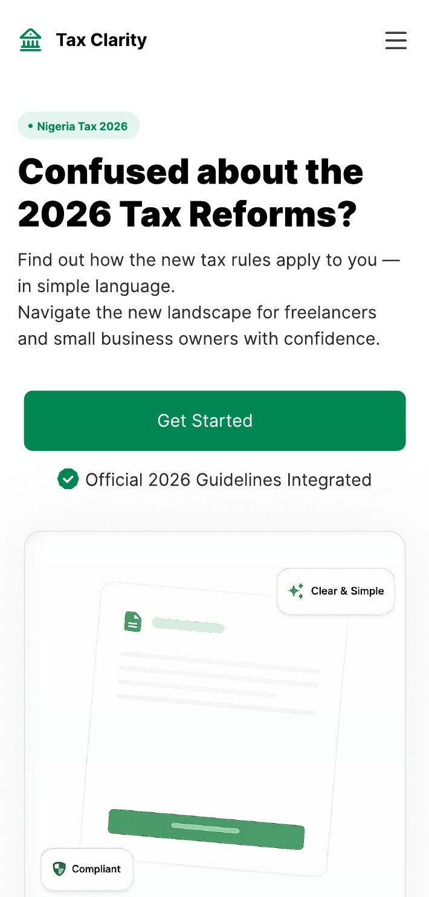

People weren't lacking willpower to comply — they were lacking a clear, personal answer
Nigeria's 2026 tax reforms arrived as dense legal language — new levies, shifted thresholds, new deadlines. Freelancers, small business owners, and salaried workers were all asking: does this affect me, and what do I do?
Tax Clarity asks a few simple questions — how you earn, roughly how much, and whether your business is registered — and returns a personalized summary with a checklist of next steps. My job was to make a topic people actively avoid feel calm, guided, and genuinely understandable.
Role
Product Designer (UI/UX) — end-to-end design
Platform
Responsive web application
Type
Community open-source project
Year
2026
Three friction points shaped every design decision
Scattered information
The reforms were everywhere — official PDFs, news articles, WhatsApp broadcasts, X threads — and sources often disagreed.
A wall of jargon
CAC registration, VAT thresholds, CIT rates, "digital infrastructure levy" — the language assumed tax literacy most people don't have.
No clear next step
Even people who understood the changes didn't know what to actually do — whether to register, what to file, or which deadlines applied.
Fear of penalties
Anxiety about getting it wrong made people avoid the topic entirely instead of engaging with it.
Landing page — the entry point
The landing page establishes trust immediately with a direct question ("Confused about the 2026 Tax Reforms?"), official guidelines badge, and a single clear call-to-action.

Three questions to personalize everything
Instead of asking people to read the law, the platform asks three plain questions — income type, income range, and business registration status — then generates a personalized tax summary.



From confusion to confidence
A brief "analysing" moment builds trust, then results land in three clear layers: what changed, what to do next, and confirmation that you're clear.





Designed to turn a stressful task into a two-minute check
Challenges and lessons
Simplifying without oversimplifying
Tax law is nuanced. The design had to feel clear without promising accuracy a free tool can't guarantee — so disclaimers are woven in naturally, not buried.
Designing for anxiety
Every micro-interaction — from the analysing animation to the green "you're clear" confirmation — was chosen to reduce stress, not just deliver information.